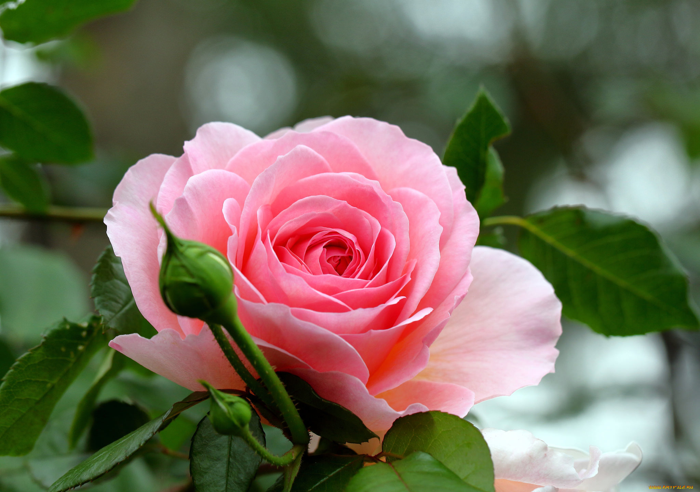

Мой любимый цветок роза

Несколько интересных фактов о розах:
- Родина большинства видов роз – Азия. Вероятно, впервые розу начали выращивать в Китае в 500 годах до н.э. На сегодняшний день известно более 30 тыс. сортов роз!
- Самую миниатюрную розу в мире вывел житель Индии по имени Судхир Хетават. Сорт называется Si. Размер бутона этой розы составляет чуть более 5 миллиметров.
- Самый дорогой сорт розы называется Джульетта. Этот шедевр Дэвида Остина был выведен в 2006 г. Создание сорта в общей сложности заняло 15 лет и обошлось в 4,37 миллиона долларов.
- Черных роз не существует. Те розы, которые иногда называют черными, на самом деле являются темно-красными.
- Самый высокий из когда-либо зарегистрированных кустов роз достигал 7 метров в высоту.
- Археологи утверждают, что розы существуют на Земле уже более 35 миллионов лет.
Виды роз
Розы классифицируют по внешним признакам и особенностям выращивания. Королева сада роза удивительна и разнообразна. Для удобства все их разбили на несколько больших категорий.
- Парковые розы;
- Кустовые розы;
- Почвопокровные розы;
- Плетистые розы;
- Ремонтантные розы;
- Чайно-гибридные розы.
Самые красивые розы в мире

Роза — самый популярный цветок во всем мире. Ее называют королевой цветов за невероятную красоту, нежность и элегантность. Ее выращивают не только для красоты. Это растение активно используется в парфюмерной промышленности, косметологии и медицине.